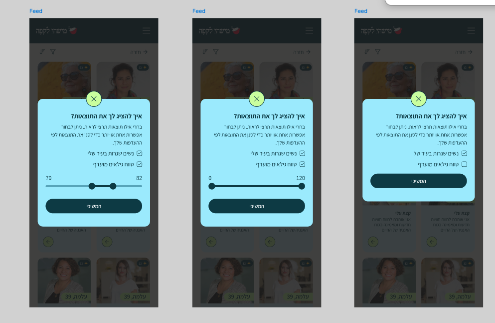
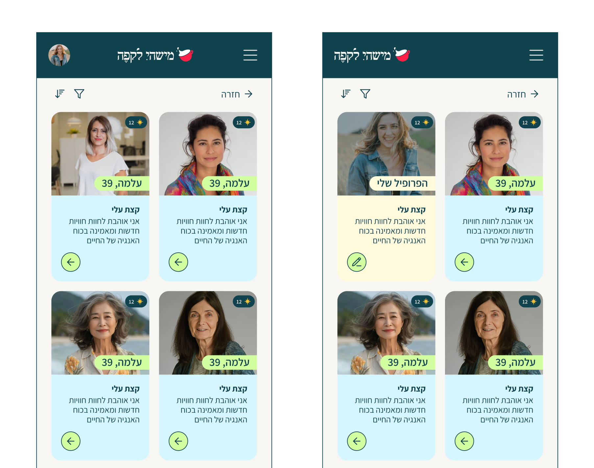

שלום גלית,
תודה רבה על הפניות המפורטות ועל הסבלנות בזמן שאנחנו עובדים על הדברים מהצד שלנו. ריכזתי כאן את הסטטוס של כל הסעיפים שהעלית, מה ייכלל בגרסה הקרובה ומה אנחנו עדיין צריכים ממך.
| הנושא | שלב |
|---|---|
| סינון הפיד לפי עיר וטווח גילאים (כולל אפשרות לבחור כמה טווחים יחד) | בעיצוב |
| ניהול התראות | בעיצוב מסך ניהול חדש בתפריט הפרופיל - ראי הסבר למטה |
| נקודות אור לא עובד | בבדיקה נשנה את הלוגיקה - ראי הסבר למטה |
| שינוי הניסוח בשאלון בשלב התמונה | קיבלנו ייכלל בגרסה הקרובה |
| הצגת הכרטיס שלי בפיד | נבחרה אפשרות א' כרטיס בתוך הפיד עם רקע צהבהב |
| בעיות התחברות במכשירים שצוינו | בבדיקה ראי הערה למטה |
| חסימת הורדה גם למשתמשות בארץ (פייסבוק, היום) | בבדיקה ראי הערה למטה |
כך נראית הצעת העיצוב למסך הסינון - היוזרית בוחרת לפי עיר ו/או טווח גילאים, יכולה לבחור אחד מהם או את שניהם, ולאשר.

3 מצבים: סינון לפי עיר + טווח גילאים מותאם · טווח גילאים פתוח · סינון לפי עיר בלבד
תודה על הבחירה. הולכים על האופציה שבה הכרטיס שלך מוצג בתוך הפיד יחד עם שאר המשתמשות, עם רקע צהבהב מובחן ותווית "הפרופיל שלי", וכך יישאר באופן עקבי.

האופציה הנבחרת: כרטיס "הפרופיל שלי" עם הרקע הצהבהב, בתוך הפיד
ראינו את הסרטון ששלחת. הפופאפ שמופיע בו הוא חלון מערכת ההפעלה של iOS - לא חלון של האפליקציה שלנו, ואין לנו אפשרות להתערב בו.
במקום זאת, אנחנו מציעים גישה אחרת - הוספת שורת "ניהול התראות" בתפריט הפרופיל שלי (עם אייקון פעמון, ליד "פני אלינו" ו"תנאי שימוש"), שתוביל למסך ייעודי שבו היוזרית תוכל לבחור איזה סוגי התראות לקבל ואיזה לא.
במסך עצמו יוצגו 3 סוגי ההתראות שיש באפליקציה, כל אחד עם טוגל להפעלה/כיבוי ועם הסבר קצר:
היוזרית יכולה לעבור על השלוש ולסמן בדיוק מה היא רוצה לקבל. בברירת מחדל - הכל פתוח.
נשמח להתחיל לעבוד על זה לקראת הגרסה הבאה. אם יש לך תיקונים לניסוחים של ההסברים מתחת לכל התראה - שלחי ונעדכן.
מעבר לבקשות שלך, הגרסה הקרובה תכלול גם תיקונים שאיתרנו בעצמנו ועוד:
היעד שלנו לגרסה הקרובה הוא יום שלישי (19.5). נעשה כל מאמץ להוציא גרסה מוקדמת יותר אם נספיק.
קיבלנו את רשימת המכשירים שציינת. לא הצלחנו לשחזר אצלנו את הבעיות במכשירים אלה. מה שכן עשינו - הוספנו מנגנון ניטור פנימי שמתעד שגיאות התחברות בזמן אמת, כך שאם הבעיה תחזור אצל מישהי, נוכל לאתר אותה מהר יותר ולטפל בה ישירות.
בדקנו עם הצוות והעלינו את הנתונים הבאים: נכון להיום, נקודות האור מוענקות רק למשתמשות שמילאו את הפידבק/דירוג לאחר הפגישה. זאת הייתה ההגדרה במסמך אפיון M4 ובמימוש בפועל.
הבנו ממך שזו לא הייתה הכוונה - הנקודות צריכות להינתן ברגע שהפגישה התקיימה (זמן הפגישה עבר), גם אם המשתמשת לא מילאה פידבק. אנחנו מקבלים את העדכון ומתחילים פיתוח כדי לשנות את הלוגיקה: 2 נקודות אור יוענקו אוטומטית לכל משתתפת ברגע שזמן הפגישה המתוזמן עבר, ללא תלות בפידבק. הפידבק ימשיך להופיע (כפי שהיום), פשוט יפסיק לחסום את הזכייה.
השינוי ייכלל בגרסה הקרובה. המסמך הפנימי שלנו ל-M4 עודכן בהתאם.
קיבלנו את הצילום מקבוצת הפייסבוק - משתמשות שמדווחות "האפליקציה לא זמינה בארצנו" למרות שהן גרות בארץ. זה אומר שמנגנון חסימת ההורדה לחו"ל (שאת ביקשת בסבב הקודם) מייצר false positives גם למשתמשות לגיטימיות.
פתחנו על זה באג, יוכבד תבדוק:
המטרה: לשמור על החסימה למשתמשות בחו"ל, אבל לוודא שמשתמשות ישראליות לגיטימיות לא נחסמות.
בעקבות הסקירה שעשית על ה-CMS (Matches חלקיים שמופיעים בלי מיקום/תאריך, ויוזרים שנשמרו ללא שם פרטי) - פתחנו בדיקה פנימית כדי להבין איך הרשומות האלה נכנסו, ולגבש פתרון שיציג ב-CMS רק דאטה שימושית או יפריד בבירור בין רשומות שלמות לחלקיות. נחזור אלייך עם הממצאים וההצעה.
תודה,